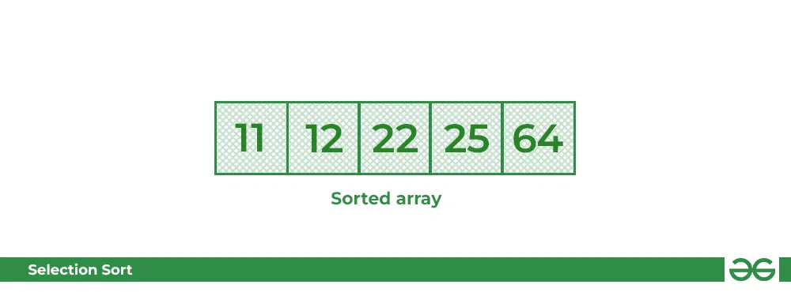

Sortowanie przez wybór
Opis algorytmu
Weźmy jako przykład tablicę elementów arr = [64, 25, 12, 22, 11].
Piersze przejście
Dla pierwszej pozycji posortowanej tablicy cała tablica jest przemierzana sekwencyjnie od indeksu 0 do 4. Pierwsza pozycja, w której obecnie przechowywane jest 64, po przejściu całej tablicy jasne jest, że 11 jest najniższą wartością. Zatem zamień 64 na 11. Po jednej iteracji liczba 11, która jest najmniejszą wartością w tablicy, zwykle pojawia się na pierwszej pozycji posortowanej listy.
![Zdjęcie, na którym pokazane jest 1. przejście algorytmu (układana jest tablica elementów: [64, 25, 12, 22, 11]](./dist/img/1 (1).webp)
Drugie przejście
Dla drugiej pozycji, gdzie występuje 25, ponownie przejdź przez resztę tablicy w sposób sekwencyjny. Po przejściu odkryliśmy, że 12 jest drugą najniższą wartością w tablicy i powinna pojawić się na drugim miejscu w tablicy, zatem zamień te wartości.
![Zdjęcie, na którym pokazane jest 2. przejście algorytmu (układana jest tablica elementów [64, 25, 12, 22, 11]](./src/img/2 (1).webp)
Trzecie przejście
Teraz, dla trzeciego miejsca, gdzie występuje 25, ponownie przejrzyj resztę tablicy i znajdź trzecią najmniejszą wartość obecną w tablicy. Podczas przechodzenia, 22 okazało się trzecią najmniejszą wartością i powinno pojawić się na trzecim miejscu w tablicy, w ten sposób zamień 22 z elementem znajdującym się na trzeciej pozycji.
![Zdjęcie, na którym pokazane jest 3. przejście algorytmu (układana jest tablica elementów [64, 25, 12, 22, 11]](./src/img/3 (1).webp)
Czwarte przejście
Podobnie dla czwartej pozycji przejdź przez resztę tablicy i znajdź czwarty najmniejszy element w tablicy Ponieważ 25 jest czwartą najniższą wartością, zajmie czwartą pozycję.
![Zdjęcie, na którym pokazane jest 3. przejście algorytmu (układana jest tablica elementów [64, 25, 12, 22, 11]](./src/img/4.webp)
Piąte przejście
W końcu największa wartość występująca w tablicy jest automatycznie umieszczana na ostatniej pozycji w tablicy Wynikowa tablica jest tablicą posortowaną.
